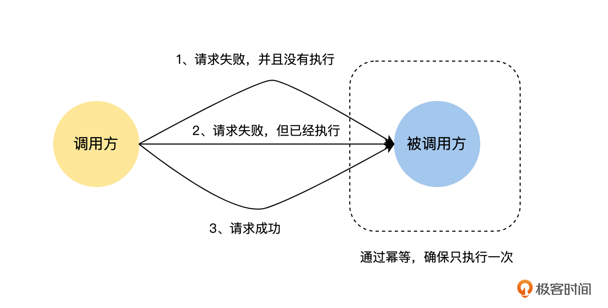
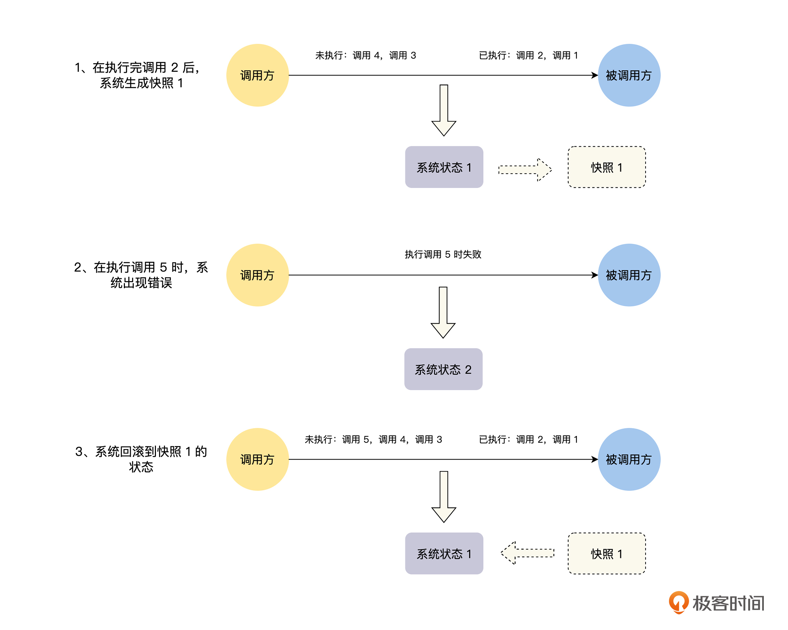

- 00 开篇词 掌握好学习路径，分布式系统原来如此简单.md.html
- 01 导读：以前因后果为脉络，串起网状知识体系.md.html
- 02 新的挑战：分布式系统是银弹吗？我看未必！.md.html
- 03 CAP 理论：分布式场景下我们真的只能三选二吗？.md.html
- 04 注册发现： AP 系统和 CP 系统哪个更合适？.md.html
- 05 负载均衡：从状态的角度重新思考负载均衡.md.html
- 06 配置中心：如何确保配置的强一致性呢？.md.html
- 07 分布式锁：所有的分布式锁都是错误的？.md.html
- 08 重试幂等：让程序 Exactly-once 很难吗？.md.html
- 09 雪崩（一）：熔断，让故障自适应地恢复.md.html
- 10 雪崩（二）：限流，抛弃超过设计容量的请求.md.html
- 11 雪崩（三）：降级，无奈的丢车保帅之举.md.html
- 12 雪崩（四）：扩容，没有用钱解决不了的问题.md.html
- 13 可观测性（一）：如何监控一个复杂的分布式系统？.md.html
- 14 可观测性（二）：如何设计一个高效的告警系统？.md.html
- 15 故障（一）：预案管理竟然能让被动故障自动恢复？.md.html
- 16 故障（二）：变更管理，解决主动故障的高效思维方式.md.html
- 17 分片（一）：如何选择最适合的水平分片方式？.md.html
- 18 分片（二）：垂直分片和混合分片的 trade-off.md.html
- 19 复制（一）：主从复制从副本的数据可以读吗？.md.html
- 20 复制（二）：多主复制的多主副本同时修改了怎么办？.md.html
- 21 复制（三）：最早的数据复制方式竟然是无主复制？.md.html
- 22 事务（一）：一致性，事务的集大成者.md.html
- 23 事务（二）：原子性，对应用层提供的完美抽象.md.html
- 24 事务（三）：隔离性，正确与性能之间权衡的艺术.md.html
- 25 事务（四）：持久性，吃一碗粉就付一碗粉的钱.md.html
- 26 一致性与共识（一）：数据一致性都有哪些级别？.md.html
- 27 一致性与共识（二）：它们是鸡生蛋还是蛋生鸡？.md.html
- 28 一致性与共识（三）：共识与事务之间道不明的关系.md.html
- 29 分布式计算技术的发展史：从单进程服务到 Service Mesh.md.html
- 30 分布式存储技术的发展史：从 ACID 到 NewSQL.md.html
- 春节加餐 技术债如房贷，是否借贷怎样取舍？.md.html
- 春节加餐 深入聊一聊计算机系统的时间.md.html
- 春节加餐 系统性思维，高效学习和工作的利器.md.html
- 结束语 在分布式技术的大潮流中自由冲浪吧！.md.html
- 捐赠
08 重试幂等：让程序 Exactly-once 很难吗？
你好，我是陈现麟。
通过学习“分布式锁”的内容，你已经了解了如何实现一个分布式锁服务，并且知道了在分布式锁的场景下，我们应该如何在正确性、高可用和高性能之间做取舍。那么对于分布式场景下，实例或服务之间的协调问题，我们就心中有数了，你可以根据业务场景，做出最合适的选择，我们又一起往前走了一大步。
但是，在极客时间的开发过程中，你又面临了一个新的问题。在通过 RPC 远程调用极客时间的课程购买接口的过程中，你可能是这样处理 RPC 的响应结果的，先是将“请求超时”的响应结果解释为“课程购买失败”，返回给用户，可是这会影响到用户的正常购买，导致一部分用户放弃。
后来，为了尽可能让用户购买成功，你对“请求超时”响应的请求进行了重试，发现用户的购买成功率确实提高了，但是却有少量的用户反馈说，他只点击了1 次购买，页面却出现了 2 笔支付成功的订单。
这确实是一个两难的问题，要么让一部分用户放弃购买，要么让少量的用户重复购买，难道没有一个好的办法吗？这里我们可以先来分析一下这个问题的根本原因，在请求的响应结果为“请求超时”的时候，我们不知道这个请求是否已经被远端的服务执行了，进一步来说就是请求的消息，是否精确一次发送到远端服务的问题，即 Exactly-once。
所以在这节课中，我们将从“为什么不能保证 Exactly-once”、“如何保证 Exactly-once ”和“Exactly-once 的挑战”这三个方面，一起来讨论如何让程序 Exactly-once。
为什么不能保证 Exactly-once
在单机系统中，模块之间的通信都是进程内的本地函数调用，在这个整体失败和同步通信的模型中，要么进程整体崩溃，要么调用完成，不会存在其他的情况，但是在分布式系统中，程序不能保证 Exactly-once 的原因主要有以下两个：
第一个是网络方面的原因。在分布式系统中，服务和服务之间都是通过网络来进行通信的，而这个网络是一个异步网络。在这个网络中，经过中间的路由器等网络设备的时候，会出现排队等待或者因为缓冲区溢出，导致消息被丢弃的情况，那么将一个消息从一个节点发送到另一个节点的时延是没有上界的，有可能非常快，比如 1 ms，也有可能是 1 分钟，甚至无穷大，这个时候就是出现消息丢失的情况了。
在服务间进行远程调用的时候，如果迟迟没有收到响应结果，为了系统整体的可用性，我们不能无限等待下去，只能通过超时机制来快速获得一个结果。其实这样做是将无界时延的异步网络模型，通过超时机制转化成了有界时延，这个方式大大减轻了我们在写程序时的心智负担。
但是，计算机的世界里没有银弹，我们在收到响应为“请求超时”的时候，无法判断是请求发送的过程中延迟了，远端服务没有收到请求；还是远端服务收到请求并且正确处理了，却在响应发送的过程中延迟了。
第二个原因是远端服务发生了故障。如果远端服务在收到请求之前发生了故障，我们会收到“网络地址不可达”的错误，对于这个错误，我们能明确判断请求没有被远端服务执行过。但是，如果远端服务是在收到请求之后发生了故障，导致无法响应而引起“请求超时”，我们无法判断请求是否被远端服务执行过，或者被部分执行过。
通过上文提到的两个原因，我们可以知道，当请求方收到“请求超时”的时候，我们无法判断远端服务是否处理过这个请求。这个时候就出现了本课开头的问题：如果我们认为这是一个临时的故障，对请求进行重试，那么可能会出现多次执行的情况，即 At-least-once，如果不进行重试，就可能会出现一次都没有执行的情况，即 At-most-once。
关于这个问题，在之前的课程“新的挑战”中“本地调用与远程调用”这部分，也有过深入的讨论，你可以参照着一起来看。
如何保证 Exactly-once
通过上面的分析，我们知道了导致消息传递，不能保证 Exactly-once 的原因主要有两个，一个是网络出现丢包或者分区等故障，另一个是远端服务发生了故障。因为这两点在分布式系统中是永远存在的，所以我们必须去直面这两个问题，通过上层的容错机制来解决它们。
一般来说，在分布式系统中，实现消息的 Exactly-once 传递，主要有三种方式：一种是至少一次消息传递加消息幂等性，一种是分布式快照加状态回滚，还有一种是整体重做，下面我们来一一介绍。
至少一次消息传递加消息幂等性
至少一次消息传递加消息幂等性的思路特别简单，我们可以结合本课开始提到的场景来分析，如果调用方在课程购买的 RPC 接口返回网络层错误，比如请求超时以及网络地址不可达等，对于这样的情况，调用方就进行重试，直到响应结果为成功或业务错误等非网络层错误。
当然，这里的请求超时也有可能是远端服务的执行时间太长导致的，为了简化讨论中的语言描述，后面我们统一归类为网络错误。
但是，我们同样要考虑到，重试会让用户对当前的课程重复购买，对于这个情况，我们可以在远端服务对课程购买接口的实现上，对请求进行去重，确保远端服务对同一个购买请求处理一次和多次的结果是完全相同的，对于这样的接口，我们称之为幂等的。
其实这个去重的思路也非常简单，你可以结合下图理解。我们只需要对用户发起的每一次课程购买的请求，生成一个唯一的 ID ，然后在课程购买的 RPC 请求中带上这个唯一的 ID ，在首次调用和重试的时候，这个唯一的 ID 都保持不变。
接着，课程购买服务在接收到请求后，先查询当前的 ID 是否已经处理过，如果是已经处理过的请求，就直接返回结果，不重复执行购买相关的逻辑了。- 
分布式快照加状态回滚
分布式快照加状态回滚指的是，在整个分布式系统运行的过程中，定期对整个系统的状态做快照，在系统运行时，不论系统的哪个地方出现故障，就将整个系统回滚到上一个快照状态，然后再重放上一个快照状态之后的情况，直到所有的消息都被正常处理，你可以结合下图理解具体操作：
- 可是很明显，分布式快照加状态回滚的方式并不适合在线业务的情况。首先，要对在线业务的所有状态做快照是非常难的一件事情，因为在线业务的状态一般都是在数据库中，如果要对整个系统的数据库都定期做快照，这将消耗非常大的资源。
其次，在通过快照进行状态回滚的时候，整个系统不能处理当前的业务请求，当前的业务请求需要进行排队等待，等系统通过快照将状态回滚完，并且重放了上一个快照状态之后的所有请求，才能开始正常处理当前业务。这个过程可能很长，这对于在线业务系统是不能接受的。
最后，如果出现任何一个小的问题或者故障，就要对整个分布式系统进行状态回滚，这也是不能接受的。
所以，分布式快照加状态回滚的方式，一般不会应用于在线业务架构中，它的主要应用场景是例如 Flink 之类的流式计算。因为在流式计算中，系统状态的存储也是系统设计的一部分，我们可以在系统设计的时候，就考虑支持快照和回滚功能。并且，在流式计算中，消息来源一般都是 Kafka 之类的消息系统，这样对消息进行重放就非常方便了。
整体重做
整体重做的 Exactly-once 的方式，可以看成是分布式快照加状态回滚的一种特殊情况。在执行任务的过程中，如果系统出现故障，就将整个任务的状态删除，然后再进行重做。整体重做的方案，一般的使用场景为批处理任务的情况，比如 MapReduce 之类的批处理计算引擎。
Exactly-once 的挑战
因为这个专栏主要讨论的是在线业务架构的分布式系统，所以接下来，我们只讨论分布式在线业务架构系统中，对于解决 Exactly-once 问题，常用的“最少一次消息传递加消息幂等性机制”面临的挑战。
重试面临的挑战
通过“最少一次消息传递加消息幂等性机制”来确保消息的 Exactly-once，我们首先要采用重试策略，来确保消息最少传递一次，但是在执行重试策略的过程中，我们要避免重试导致的系统雪崩的问题。
在系统快要接近性能瓶颈的时候，某些节点可能会因为负载过高而响应超时，如果这个时候再无限制地重试，就会进一步放大系统的请求量，将一个局部节点的性能问题，放大到整个系统，造成雪崩效应。
一般情况下，重试策略都会有两个限制，第一个是限制重试的次数，比如，如果重试 3 次都失败了，就直接返回请求失败，不再继续重试；第二个是控制重试的间隔，一般采取指数退避的策略，比如重试 3 次，第一次请求失败后，等待 1 秒再进行重试，如果再次失败，就等待 3 秒再进行重试，仍然失败的话，就等待 9 秒后再进行重试。
幂等面临的挑战
对于请求的幂等问题，首先，我们要讨论能否通过对操作进行改写，将一个非幂等操作变成一个幂等操作，然后，我们再讨论如何将一个非幂等操作变成一个幂等操作，最后，我们讨论在有外部系统的情况下，如何保证请求的幂等性。
操作的幂等性讨论
对于请求的幂等处理，如果请求本身就是幂等的，比如请求只是查询数据，没有任何的状态修改，或者是像更新头像这样简单的重置操作，那么我们可以什么都不用做。这里我们要注意一个情况，假设有一个请求是为用户的余额增加 5 元，如果采用下面的 SQL 进行处理，我们都知道它不是幂等的：
UPDATE table SET balance = balance + 5 WHERE UID = 用户ID ；
但是，如果我们将上面的 SQL 改写为下面的三个操作，你可以思考一下，这个时候我们的请求是否为幂等的呢？
- 在数据库中查询用户的余额：SELECT balance FROM table WHERE UID = 用户 ID ；
- 在内存中计算用户的余额：balance = balance + 5 ，假设计算结果为 10 。
- 更新用户的余额到数据库：UPDATE table SET balance = 10 WHERE UID = 用户 ID ；
在上面的操作中，虽然对数据库的两个操作都是幂等的，但是整体的操作却不是幂等的，因为第 2 步的操作不是幂等的，上面的改写只是将这个计算操作，从数据库中迁移到内存中，并不会改变这个请求的幂等性。
如何确保操作的幂等性
如果是一个非幂等操作的请求，我们如何将其变成一个幂等的请求呢？一个常用的方法就是我们在上面课程购买的例子中介绍的，在请求中增加唯一 ID ，然后在处理请求时，通过 ID 进行去重，确保对相同 ID 的请求只处理一次。
这里要特别注意的是，将请求处理结果写入数据库的操作，以及标记请求已处理的操作，也就是将请求唯一的 ID 写入数据库，它们都必须在同一个事务中，让事务来保证这两个操作的原子性。
否则，如果在写入处理结果后，请求唯一的 ID 写入数据库之前，服务发生崩溃的话，重试的时候就会使请求被执行多次；如果在请求唯一的 ID 写入数据库后，写入处理结果之前，服务发生崩溃，那么后面的重试请求都将因为去重而丢弃，导致请求一次都没有执行。
外部系统的幂等性保障
另外，还有一种情况，如果我们请求的操作会影响外部系统的状态，比如在一个请求中，我们需要给用户发送一条 IM 消息，因为发送 IM 消息是由外部的 IM 服务来提供的，我们可以通过下面两种方案，来保证请求操作整体的幂等性：
第一个方案，由 IM 服务提供幂等的消息发送接口。在这种情况下，我们采用全局唯一的 ID 作为请求的 ID，这样当前请求在调用 IM 消息发送接口时，我们只需要传入当前请求的唯一 ID 作为消息发送的 ID 即可，由 IM 服务内部根据消息发送 ID 来进行去重操作，确保 IM 消息发送的幂等性。
第二个方案，IM 服务提供 2PC 的消息发送接口，然后我们在当前请求的内部通过 2PC 的机制，确保该请求的内部状态修改逻辑， IM 消息的发送和请求唯一的 ID 写入数据库，这三个操作整体是一个原子操作。
到这里可以看出，如果我们请求的操作会影响到外部系统的状态，要保证请求的幂等性是需要依赖外部系统的支持才能实现的。
总结
本节课，我们一起讨论了分布式系统场景下的重试和幂等的相关问题，接下来一起来总结一下这节课的主要内容：
首先，我们讨论了在分布式场景下，由于不可靠的网络和随时都有可能出现的故障，导致在单体服务上非常容易保证的 Exactly-once ，在分布式系统中却非常困难。
其次，我们一起讨论了保证 Exactly-once 的三种方式：至少一次消息传递加消息幂等性、分布式快照加状态回滚和整体重做。这样，以后你再碰到需要 Exactly-once 的业务场景，就可以依据业务场景来进行选择了。
最后，我们一起讨论了在分布式系统中，确保 Exactly-once 面临的挑战：第一是重试的时候需要限制重试的间隔和次数，确保系统不会受到局部故障的影响，导致整体雪崩；第二是保障接口的幂等性，特别是对于涉及外部系统的情况下，如何保障接口整体的幂等性。通过这些讨论，以后对于 Exactly-once 你就心中有数了。
思考题
在 IM 系统中，我们如何实现幂等的消息发送接口？
欢迎你在留言区发表你的看法。如果这节课对你有帮助，也推荐你分享给更多的同事、朋友。
© 2019 - 2023 Liangliang Lee. Powered by gin and hexo-theme-book.